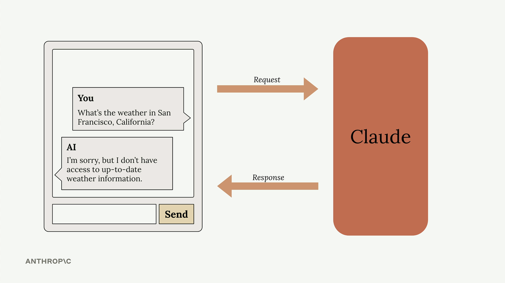
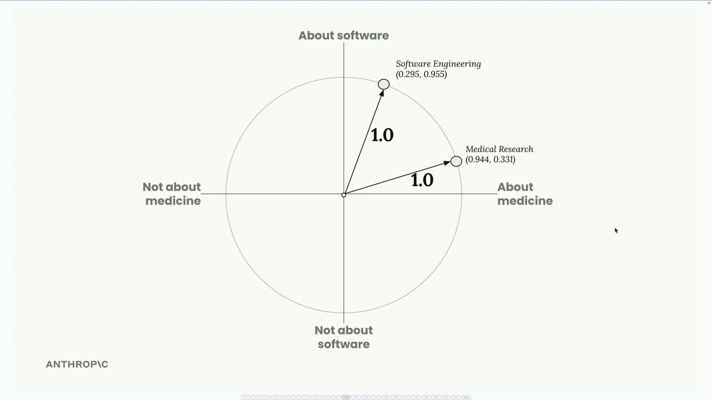
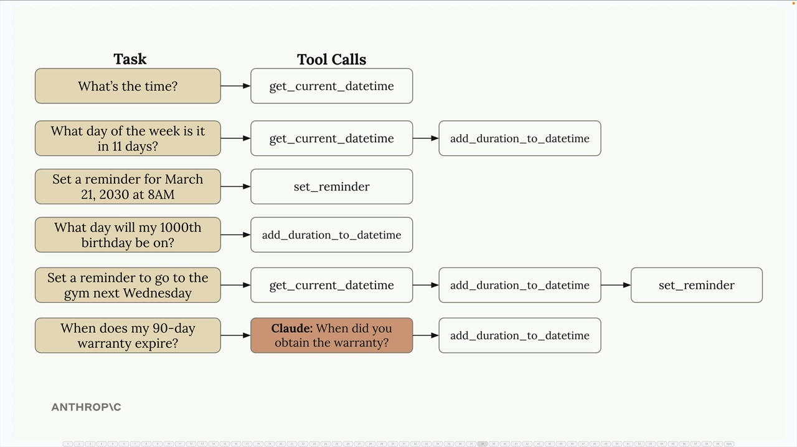

Building with the Claude API
คอร์สใหญ่ที่สุดของ Academy — พาไปตั้งแต่เรียก API พื้นฐาน ไปจนถึงสร้าง agent ที่ใช้ tools, RAG และฟีเจอร์ต่าง ๆ ของ Claude
เพราะเนื้อหายาวมาก ด้านล่างสรุปเป็นใจความสำคัญตามลำดับ module ของคอร์สจริง — เพื่อให้เห็นภาพรวมว่าแต่ละช่วงสอนอะไรและต่อยอดกันอย่างไร
🔑 เรียก Claude ผ่าน API
เริ่มจากภาพรวมตระกูลโมเดล แล้วเข้าใจ request lifecycle 5 ขั้น สร้าง API key ที่ console.anthropic.com แล้วยิง request พื้นฐาน จุดที่ต้องจำให้แม่นคือ API เป็น stateless — มันไม่จำบทสนทนาให้ ดังนั้นการทำ multi-turn ต้อง เก็บ list ของ messages เองแล้วส่งทั้งชุดทุกครั้ง นอกจากนี้ยังมี system prompt (กำหนดบทบาท), temperature (ปรับความสุ่ม), response streaming (ส่งทีละ chunk แก้ปัญหา response ช้า) และการขอ structured data (เช่น JSON)
📊 Prompt evaluation
ก่อนจะปรับ prompt ต้อง "วัด" ได้ก่อน — eval คือการทดสอบอัตโนมัติว่า prompt ทำงานดีแค่ไหน workflow มี 5 ขั้น: ร่าง prompt → สร้าง dataset → รัน eval → ให้คะแนน (grade) → ปรับ การให้คะแนนทำได้ 2 แบบ: model-based grading (ให้โมเดลให้คะแนน 1–10) หรือ code-based grading (ตรวจ format/syntax ด้วยโค้ด)
✍️ Prompt engineering
ปรับ prompt แบบวนซ้ำ: ตั้งเป้า → ประเมิน → ปรับ หลักสำคัญคือ ชัดเจนและตรงประเด็น (บรรทัดแรกสำคัญที่สุด), เจาะจง ให้ guideline ชัด, ใช้ XML tags จัดโครงสร้าง และ ให้ตัวอย่าง (one-shot / multi-shot)
🛠️ Tool use
Tools ให้ Claude เข้าถึงข้อมูล/ระบบภายนอกที่อยู่นอก training data ได้ คุณนิยาม tool เป็น Python function พร้อม JSON schema ที่บอก Claude ว่าจะใช้เมื่อไหร่/อย่างไร เมื่อ Claude ตอบกลับมาเป็นหลาย block ให้ execute function แล้วส่งผลกลับ — ทำซ้ำได้จน stop reason บอกว่าจบ รองรับทั้ง หลาย tool, fine-grained tool calling (อัปเดต argument แบบ streaming) และ built-in tools อย่าง text editor และ web search


🔎 RAG และ Agentic Search
RAG (Retrieval-Augmented Generation) คือการดึงข้อมูลที่เกี่ยวข้องมาเสริมก่อนให้ Claude ตอบ เริ่มจากกลยุทธ์แบ่ง chunk แล้วแปลงข้อความเป็น vector ด้วย embeddings เพื่อทำ semantic search


วงจร RAG ครบคือ chunk → embed → store → search → generate และทำให้ดีขึ้นได้ด้วยการรวม BM25 (lexical search) เข้ากับ semantic search เป็น multi-index pipeline ที่ใช้จุดแข็งของทั้งสองแบบ


✨ ฟีเจอร์ของ Claude
Extended thinking
ให้คิดลึกสำหรับงาน reasoning ซับซ้อน — ใช้พอเหมาะเพราะมี cost/latency
Image / PDF support
วิเคราะห์รูปด้วย vision และอ่าน/วิเคราะห์ PDF ได้โดยตรง
Citations
อ้างอิงแหล่งที่มา เพิ่มความโปร่งใสและ verify ได้
Prompt caching
เก็บผลประมวลผลของข้อความเดิมไว้ใช้ซ้ำ เร็วและถูกลงเมื่อส่งเนื้อหาเหมือนเดิม
และยังมี Code Execution + Files API ที่ทำงานคู่กันเพื่อ delegate งานซับซ้อนให้ Claude
🔌 Model Context Protocol (MCP)
MCP เป็น communication layer ที่ ย้ายภาระเรื่อง tool ไปไว้ที่ server — มี client/server และ message types (เช่น ListTools) คอร์สพาสร้าง CLI chatbot ด้วย Python SDK + decorators, ใช้ server inspector debug, นิยาม resources (คล้าย GET handler) และ prompts (template) เรียนลงลึกได้ในคอร์ส Introduction to MCP →
🤖 Agents และ Workflows
เมื่องานทำครั้งเดียวไม่จบ มี 2 แนวทาง: workflows ที่กำหนดขั้นตอนไว้ล่วงหน้า (parallelization = แยกทำพร้อมกัน, chaining = ต่อ output→input, routing = จัดประเภทแล้วส่งวิธีเฉพาะ) กับ agents ที่ให้ goal + tools แล้วปล่อยให้ Claude คิดเอง



สรุปการเลือก: workflows = predefined คุมได้/คาดเดาง่าย, agents = ยืดหยุ่นแต่แลกมาด้วย reliability/cost ที่คุมยากกว่า
🎯 สรุปใจความสำคัญ
- API เป็น stateless — ต้องเก็บ messages เองแล้วส่งทั้งชุดทุกครั้ง; ใช้ streaming แก้ปัญหา response ช้า
- วัดด้วย evals ก่อนปรับ prompt; prompt engineering = ชัดเจน เจาะจง ใช้ XML tags และให้ตัวอย่าง
- Tool use ให้ Claude เข้าถึงระบบภายนอกผ่าน function + JSON schema
- RAG: chunk → embed → store → search → generate; ผสม BM25 + semantic เป็น multi-index
- ฟีเจอร์เด่น: extended thinking, vision/PDF, citations, prompt caching, code execution + Files API
- เลือก workflow (คุมได้) หรือ agent (goal+tools ยืดหยุ่น) ตามงาน